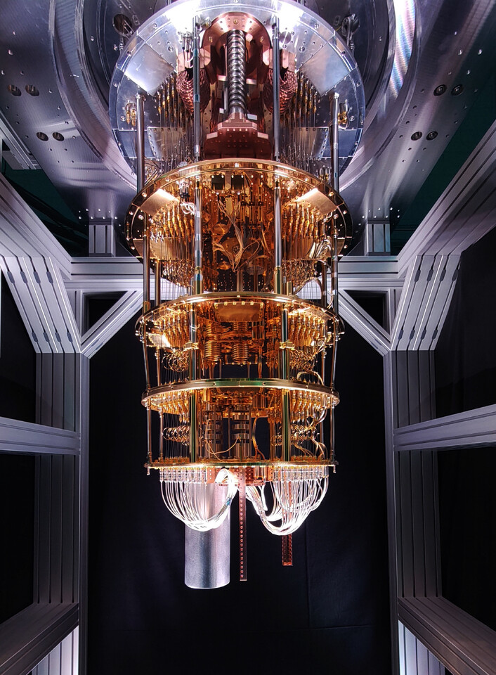

 Quantum computing uses quantam mechanics principles. Unlike classical computers which use bits (0 and 1), quantum computers use qubits. qubits can be in superposition meaning that they can be in 0 and 1 at the same time, allowing quantum computers to process many possibilities simultaneously. Then theres quantum entanglement, in which Einstein defined it as 'spook action at a distance'. When qubits are entangled, the state of a qubit affects another qubit(the state of a qubit affects another qubit, no matter the distance). Quantum gates manipulate qubits. Unlike classical gates which are used to perform simple operations, quantum gates perform rotations in a quantum state space. Quantum computers are very sensitive to the environment. Decoherence, which causes a qubit to loose it's state, hence the need for operating quantum computers are low temperatures(colder than space).
Ocean hillsong united
| Name | address | mobile | emails |
|---|---|---|---|
| Tony Stalk | Olivia City | +130 113 330 | tonyStalk@gmail.com |
| Steve Rodger | Brooklyn | +130 102 103 | steveRodgers@gmail.com |
| Thor Odinson | Asgard | +1 113 330 | odinsonThor@gmail.com |
| Bruce Barner | Washington City | +130 100 001 | bruceBarner@gmail.com |
| Natasha Raminoff | Siberia Russia | +13 100 001 | natshaRaminoff@gmail.com |